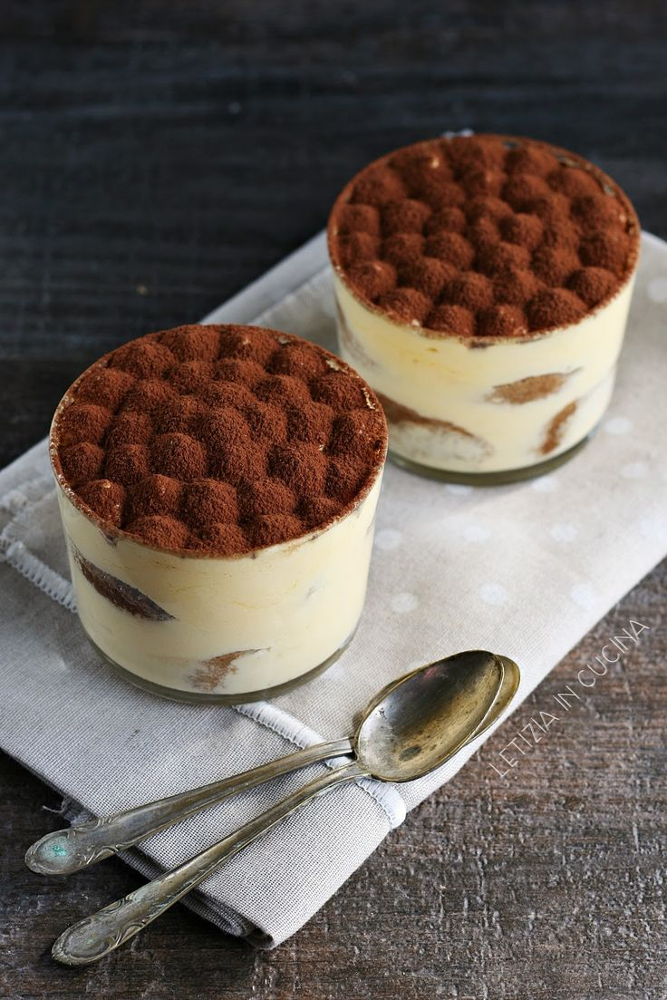

Desserts

Tiramisu Recipe
Ingredients:
- 1 cup strong brewed coffee, cooled
- 1/2 cup coffee liqueur (optional)
- 2 large eggs, separated
- 3/4 cup granulated sugar
- 1 cup mascarpone cheese
- 1 cup heavy cream
- 1 teaspoon vanilla extract
- 1 package ladyfingers (about 24 pieces)
- Unsweetened cocoa powder, for dusting
- Dark chocolate shavings (optional, for garnish)
Instructions:
- Prepare the Coffee Mixture: In a shallow dish, combine the brewed coffee and coffee liqueur. Set aside for dipping the ladyfingers.
- Make the Mascarpone Filling: In a large bowl, beat the egg yolks with 1/2 cup sugar until thick and pale in color. Add the mascarpone cheese and mix until smooth and well combined.
- Whip the Cream: In another bowl, whip the heavy cream, remaining 1/4 cup sugar, and vanilla extract until it forms soft peaks.
- Combine Filling: Gently fold the whipped cream into the mascarpone mixture until blended.
- Prepare the Egg Whites: In a clean bowl, beat the egg whites until stiff peaks form. Gently fold the egg whites into the mascarpone and cream mixture, being careful not to deflate the mixture.
- Assemble the Tiramisu: Quickly dip each ladyfinger into the coffee mixture, ensuring they are moist but not soggy. Arrange a layer of soaked ladyfingers at the bottom of a serving dish. Spread half of the mascarpone mixture over the ladyfingers. Repeat with another layer of soaked ladyfingers and the remaining mascarpone mixture.
- Chill: Cover the tiramisu and refrigerate for at least 4 hours, or overnight, allowing the flavors to meld and the dessert to set.
- Serve: Just before serving, dust the top generously with unsweetened cocoa powder. Garnish with dark chocolate shavings if desired.
- Enjoy! Serve chilled, diving into layers of creamy mascarpone, coffee-soaked ladyfingers, and rich cocoa for a classic Italian dessert experience.

Vanilla Panna Cotta Recipe
Ingredients:
- 2 cups heavy cream
- 1/2 cup milk
- 1/3 cup granulated sugar
- 1 teaspoon vanilla extract or 1 vanilla bean, split and scraped
- 2 1/4 teaspoons gelatin powder
- 3 tablespoons cold water
Instructions:
- Prepare the Gelatin: In a small bowl, sprinkle the gelatin over the cold water and let it sit for about 5-10 minutes to soften.
- Heat the Cream and Milk: In a saucepan, combine the heavy cream, milk, and sugar. If using a vanilla bean, add both the seeds and the pod; if using vanilla extract, it will be added later. Heat the mixture over medium heat until it just begins to simmer. Do not boil. Remove from heat.
- Dissolve the Gelatin: Remove the vanilla bean pod if used. Add the softened gelatin to the hot cream mixture and stir until the gelatin is completely dissolved.
- Add Vanilla Extract: If using vanilla extract, stir it in now.
- Pour into Molds: Divide the mixture into serving dishes or molds. Small glass cups or ramekins work well for this.
- Chill: Refrigerate the panna cotta for at least 4 hours, or until set. It should be firm to the touch but still jiggle gently when nudged.
- Serve: To serve, you can either invert the panna cotta onto a plate or serve it directly in the glass or ramekin. Garnish with berries, fruit coulis, or a drizzle of honey if desired.
- Enjoy! This creamy, delicate vanilla panna cotta makes a perfect dessert for any occasion, offering a light yet rich flavor that's both satisfying and elegant.